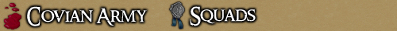
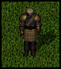
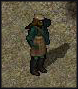
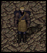
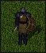
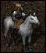

<TABLE BORDER CELLPADDING="0" background="bocimages/scrollbgdark.gif" width="100%">
	<TR>
	<!-- Header or whatever -->
	<BR>
		<TD valign="top" class="notes">
		After becoming Juniors, Covian
	      guardsmen may choose to join a Squad. Squads are defined and select groups
	      of guardsmen that are trained in a particular field, rigorously improving
	      their ability and overall combat prowess. A Squad is usually lead by an officer
	      (Sergeant or above), but this is not always necessary. <BR>
	      In the wide confusion of battle, these specialist Squads are renowned for
	      having the required discipline and training to stick to their roles and see
	      the battle fought effectively. They form the core of the Covian Army.<BR>
	      <BR>
		<b><u>Current Squads</u></b><br>
	      <TABLE BORDER="0" CELLPADDING="2" WIDTH="550" class="notes">
		<TR>
		  <TD valign="top" width="150" class="notes"><DIV align="center">
		      <BR>
		      
		    </DIV>
		  </TD>
		  <TD valign="top" width="400" class="notes"><B>The 1st Baron's Own
		    Grenadiers</B><BR>
		    <I>Tome:</I>
		    <A HREF="http://grenadiers.sugeworld.com" TARGET="_blank">http://grenadiers.sugeworld.com</A>
		    <P>
		    The Baron's Own Grenadiers are the elite both melee and ranged units of the
		    Covian Army. Specialising in both archery and close combat, these guardsmen
		    excel in death from all angles, and provide the raw firepower that leads
		    the Army to victory. They are tough, hardy, and dependable. <BR>
		    These guardsmen are also well known for their role in guarding the Baron
		    of Cove himself, and are sometimes tasked with special errands from Lord
		    Octiovus.
		    <P>
		    <U>Uniform:</U> Full Shadow Platemail, Shadow Heater Shield, Covian Cap,
		    Covian Sash, Covian Kilt, Boots, and Bronze Platemail Arms.
		    <P>
		    <U>Requirements:</U> Must be at least a Junior Guardsman. Must successfully
		    pass Grenadiers Selection.</TD>
		</TR>
	      </TABLE>
	      <hr>
	      <TABLE BORDER="0" CELLPADDING="2" WIDTH="550" class="notes">
		<TR>
		  <TD valign="top" width="150" class="notes"><DIV align="center">
		      <BR>
		      
		    </DIV>
		  </TD>
		  <TD valign="top" width="400" class="notes"><B>The 2nd Light Company</B><BR>
		    <P>
		    The Light Company are the eyes and ears of the Covian Army. Silently, they
		    ease through the lands of Britannia, providing the Army and the Baronship
		    with critical intelligence on enemies (and allies). However, nay think these
		    guardsmen are an easy ride. Light Company specialists are extremely well
		    trained with the kryss, a fast and deadly weapon, and also have some knowledge
		    in the art of poisoning.
		    <P>
		    <U>Uniform:</U> Full Green Horned Leather Jacket, Covian Cap, Covian Sash,
		    Covian Kilt, Boots.
		    <P>
		    <U>Requirements:</U> Must be at least a Junior Guardsman. Must pass Scouting
		    Course.
		    <P>
		    <U>Recommended Skills:</U> Stealth, Hiding, Poisoning, and/or Ninjitsu.
		  </TD>
		</TR>
	      </TABLE>
	      <hr>
	      <TABLE BORDER="0" CELLPADDING="2" WIDTH="550" class="notes">
		<TR>
		  <TD valign="top" width="150" class="notes"><DIV align="center">
		      <BR>
		      
		    </DIV>
		  </TD>
		  <TD valign="top" width="400" class="notes"><B>The 6th Covian Arcanists</B><BR>
		    <P>
		    The Arcanists claim to be the brains of the Army, spending most of their time reading or studying spells and enchantments. Arcanists are a support role for the Army, powerful in both offence and defence, able to take either role as necessary. In battle, the Arcanists are often a primary target, and so they normally try to enter after the first strike, to avoid the first volley of attacks, in order to throw off the enemy's targetting, and mop up what is left what is left. Don't underestimate this squad because of the Arcanist's stature and the lack of the muscles of the Covian warriors, their powerful and well trained minds are to be feared.
		    <P>
		    <U>Uniform:</U> Black Leathers, Agapite Hued Arms and Gloves, Covian Cap, Covian Sash,
		    Covian Kilt, Boots.
		    <P>
		    <U>Requirements:</U> Must be at least a Junior Guardsman. Must pass Arcanist's
		    Course.
		    <P>
		    <U>Recommended Skills:</U> Magery, Wrestling, Meditation, Evaluating Intelligence.
		    <P>
		  </TD>
		</TR>
	      </TABLE>
	      <hr>
		<b><u>Disbanded Squads</u></b><br>
	      <TABLE BORDER="0" CELLPADDING="2" WIDTH="550" class="notes">
		<TR>
		  <TD valign="top" width="150" class="notes"><DIV align="center">
		      <BR>
		      
		    </DIV>
		  </TD>
		  <TD valign="top" width="400" class="notes"><B>The 3rd Glenmore Highlanders
		    (DISBANDED)</B><BR>
		    <P>
		    The Glenmore Highlanders are the Army's heavy infantry, tough and harsh.
		    The Highlanders are the backbone of any advance, though not always being
		    in the fore of the attack. They are the &#147;body&#148; of the Army, as
		    opposed to being the heavy firepower of the Grenadiers, or the full on charge
		    of the Dragoons.<BR>
		    In character the Highlanders have very thick and gruff accents, and they
		    are sticklers for discipline and order. They will not let even minor
		    infringements of the rules go unpunished. They tend to either be completely
		    devoid of a sense of humor, or have a rather bleak and twisted one. They
		    value the fact they had no casualties over a great number of enemies slain.<BR>
		    Due to their heritage in the Glenmore Mountains, they are impervious to bad
		    weather, and enjoy very strong drink, far stronger than the usual Sosarian
		    spirits. <BR>
		    When envisaging these chaps in battle think about the slow moving 'blob'
		    of soldiers. Making sure their brothers stay alive and avoid running off
		    getting themselves or their brothers killed. Other squads can always retreat
		    to their area to heal or they can push an enemy out of a region simply by
		    moving in and refusing to budge.
		    <P>
		    <U>Uniform:</U> Full Shadow Platemail, Shadow Norse Helmet, Bronze Platemail
		    Tunic, Bronze Heater Shield. Covian Cap, Covian Sash, Covian Kilt, Boots.
		    <P>
		    <U>Requirements:</U> Must be at least a Junior Guardsman. Must complete
		    Highlander Trials.
		    <P>
		    <U>Recommended Skills:</U> Parrying! Shields are a MUST!
		  </TD>
		</TR>
	      </TABLE>
	      <hr>
	      <TABLE BORDER="0" CELLPADDING="2" WIDTH="550" class="notes">
		<TR>
		  <TD valign="top" width="150" class="notes"><DIV align="center">
		      <BR>
		      
		    </DIV>
		  </TD>
		  <TD valign="top" width="400" class="notes"><B>The 4th Altmere Dragoons (DISBANDED) </B><BR>
		    <P>
		    The Altmere Dragoons are the mobile infantry of the Covian Army. Do NOT be
		    mistaken. These chaps nay ride into battle atop their fine steeds. Their
		    horses are but a method of transport, and thus enable the Dragoons to respond
		    quickly to enemy movement, and relocate their position if and where
		    necessary.<BR>
		    With their horse-riding skill, the Dragoons act also as messengers, their
		    communication between forces providing an essential link, and a winning strategy
		    over foreign armies.<BR>
		    In battle itself, the Dragoons act as skirmishers. Always on the move, these
		    skilled combatants will be at the forefront of any charge, and will engage
		    the Enemy on a hit and run basis.
		    <P>
		    <U>Uniform:</U> Iron Platemail Arms, Gloves, and Gorget. Shadow Chainmail
		    Tunic, Trousers. Covian Cap, Covian Sash, Covian Kilt, Boots.
		    <P>
		    <U>Requirements:</U> Must be at least a Junior Guardsman. Must pass Dragoon
		    Trials.<BR>
		  </TD>
		</TR>
	      </TABLE>
		  <hr>
	      <TABLE BORDER="0" CELLPADDING="2" WIDTH="550" class="notes">
		<TR>
		  <TD valign="top" width="150" class="notes"><DIV align="center">
		      <BR>
		     
		    </DIV>
		  </TD>
		  <TD valign="top" width="400" class="notes"><B>The 5th Covian Navy (DISBANDED)</B><BR>
		    <P>
		    The original Covian Navy was founded over a decade ago by his Lordship, Baron Octiovus, 
			and had initial success in mapping the islands around Cove and engaging and destroying 
			many Orcish vessels.<br>
			However, during the Orcish occupation of Cove, the Navy was surrounded. And despite the valiant efforts of 
			the Naval defenders, the entire fleet was sunk.<br>
			It is said the ghosts of those sailors 
			killed by the Orcs now haunt the Covian docks.<p>

Since then, there has been no official Covian Navy, but rather a loose collection of ships working to keep 
Orcish and pirate vessels out of Cove's water ways, and launching occasional mapping missions with limited 
success. However, the Baron has decided the time is nigh for Cove to rule the waves once more.
		    <P>
		    <U>Uniform:</U> Dyed Shadow Leather. Dyed Blue Sleeves, Gloves, and Gorget. Blue Skullcap, Covian Sash, Covian Kilt, Boots.
		    <P>
		    <U>Requirements:</U> Must be at least a Junior Guardsman. Must adhere to Sailor Requirements.<BR>
		  </TD>
		</TD>
		</TR>
	      </TABLE>
	</TR>
</TABLE>
